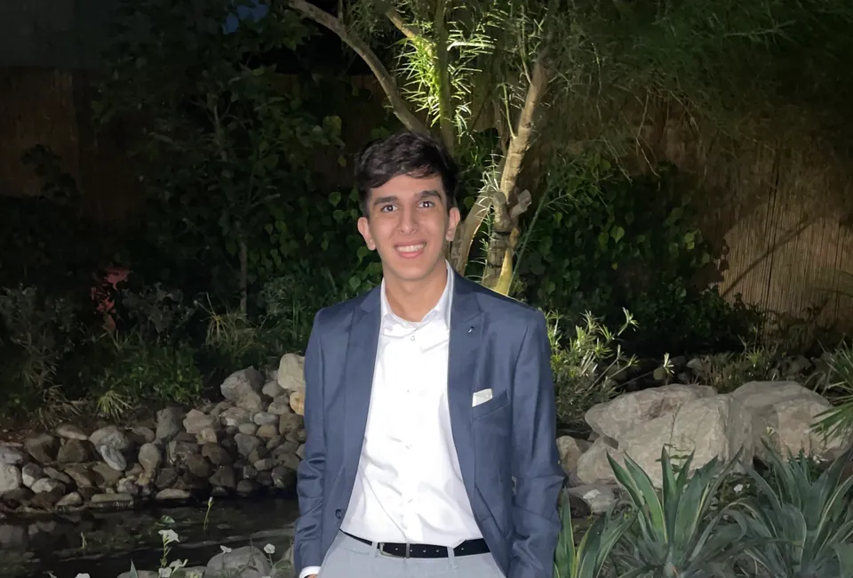

↗
Data-Driven
Decisions backed by analytics and user testing, not just intuition. I believe in measuring success.

Hi, I’m Yahya. I design and build digital products that solve real problems, focusing on clarity, usability, and solutions that actually work.
Decisions backed by analytics and user testing, not just intuition. I believe in measuring success.
Understanding users’ pain points is the first step toward solving them. Design is for people.
Attention to detail separates good design from great design. I sweat the small stuff.
Employment history is separated from case studies, making role scope and professional responsibility immediately clear.
Bachelor of Science in Computing and Information Technologies · Minor in Business Administration · Degree awarded May 2026